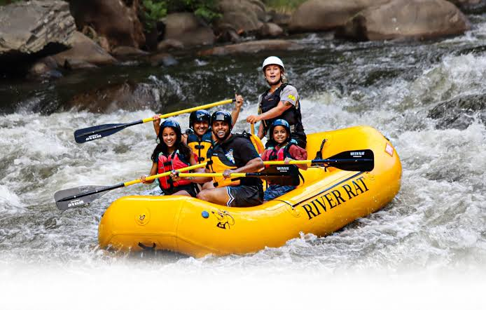
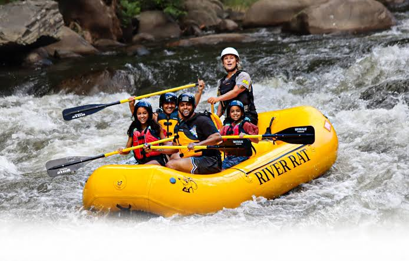

Our Misson

Our mission at White Water Rafting is to deliver unforgettable adventures, connecting people with nature while promoting safety, camaraderie, and environmental care.

Our mission at White Water Rafting is to deliver unforgettable adventures, connecting people with nature while promoting safety, camaraderie, and environmental care.
Founded in 2025 by Precious Onotu, White Water Rafting was born from a passion for adventure and nature’s untamed beauty. Starting with a single raft, it quickly grew into a renowned company known for thrilling experiences, expert guides, and a commitment to safety and the environment. Today, it stands as a symbol of exploration, courage, and the joy of connecting with nature.

 
